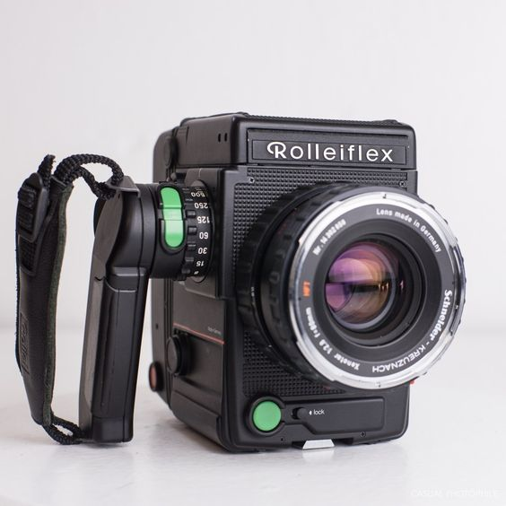

Medium Format Cameras
Medium format cameras are known for their large sensors, which provide exceptional image quality, high resolution, and superior dynamic range. These cameras are often used by professional photographers for commercial, fashion, and fine art photography.
Features of Medium Format Cameras
Some key features of medium format cameras include:
- Large sensors that are significantly bigger than full-frame sensors
- High resolution for detailed images
- Exceptional dynamic range and color depth
- Interchangeable lenses
- Robust build quality
Popular Medium Format Camera Brands and Models
Some popular brands and models in the medium format camera market include:
- Hasselblad X series (e.g., Hasselblad X1D II 50C)
- Fujifilm GFX series (e.g., Fujifilm GFX 100S, Fujifilm GFX 50R)
- Phase One XF IQ4
Medium format cameras are ideal for photographers who need the highest possible image quality for large prints and detailed work.